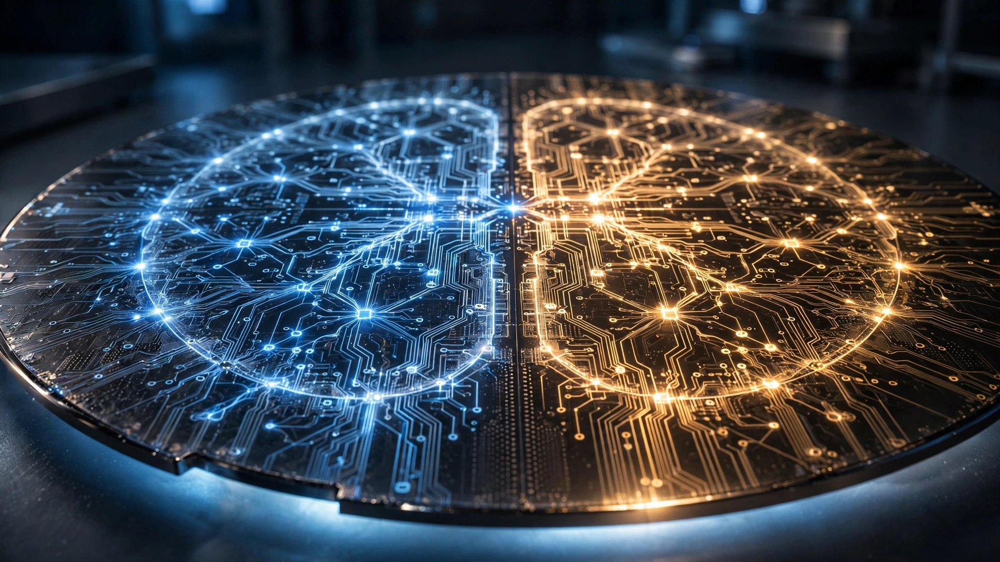

Google’s ‘Frozen’ Chip Burns Gemini Into Silicon for 6–10× Efficiency. Nobody Else Is Making That Bet.
Google is developing a custom chip codenamed “Frozen v2” that permanently etches parts of Gemini’s architecture into silicon, promising 6–10× more tokens per watt than its current TPUs. Every other hyperscaler building inference ASICs keeps them model-agnostic. Google alone is locking one chip to one model family. The efficiency prize is enormous. So is the risk if the architecture changes.

Zero point two four watt-hours. That is all it takes, the energy a single median Gemini query consumes, according to Google’s own disclosure last August, the most comprehensive per-prompt energy figure any AI company has ever published, a transparency milestone that let researchers outside Google finally attach real numbers to the vast and otherwise invisible electricity appetite of commercial large language model inference. Custom TPU chips handling the actual neural network math account for 58% of that total. Everything else vanishes into CPUs, memory, cooling, and idle backup machines standing by in case hardware fails.
Google looked at that 58% slice and decided it was too large. By a factor of ten.
The Information reported Monday that Google is developing a new server chip, internally called “Frozen v2,” that would burn parts of Gemini’s model architecture directly into the silicon. Not the model weights. Those can still be updated as new training runs complete, the same way you flash new firmware onto a router without replacing the router. What gets frozen is the architecture itself: the attention patterns, the data-flow paths, the memory access sequences that define how Gemini transforms a prompt into a response, the entire computational skeleton that makes this model Gemini rather than Claude or GPT. Engineers estimate the chip could deliver 6–10× more AI tokens per unit of power than Google’s latest custom TPUs, and deployment could begin as early as 2028.
Its name says it all. “Frozen” means the computational graph is locked at fabrication. You cannot reconfigure it. Each chip does one thing extraordinarily well, and if the model architecture changes after the chip is manufactured, every wafer of it becomes scrap.
What 6× Actually Means at Google Scale
Google handles billions of Gemini queries per day. Start with a conservative estimate of two billion daily queries at 0.24 Wh each, and the annual energy budget for Gemini inference alone lands around 175 GWh, enough electricity to power roughly 16,200 American homes for a year, using the EIA’s 10.8 MWh per household average.
Now run the Frozen v2 numbers against that baseline: each query’s TPU share is 0.139 Wh, and at 6× efficiency it drops to 0.023 Wh while non-TPU overhead stays constant at 0.101 Wh. Total query energy falls to 0.124 Wh, a 48% reduction. At the optimistic end of Google’s 10× claim, the TPU share drops to 0.014 Wh and total query energy hits 0.115 Wh: 52% savings.
Annualized across two billion daily queries, that amounts to 84–91 GWh per year in saved electricity, roughly the output of a 30 MW solar farm running at California’s average capacity factor. But raw energy savings understate the real payoff, because the number that actually matters is compute density. Within the same power envelope, the same data center, the same grid connection that Google already has permits and transmission rights for, the company could serve six to ten times more Gemini queries than it can today. In an industry where Google Cloud has been turning away paying customers because of compute constraints, that density multiplication is the actual prize.
Per-token efficiency reveals an even wider gap. A systematic review of 62 studies published in Springer Nature this June benchmarked Google’s TPU v5e at approximately 10.66 tokens per joule under normalized inference conditions, versus 6.00 tokens per joule for NVIDIA’s H100, a 78% advantage for Google with ±15–25% uncertainty baked into both measurements. At 6–10× above that TPU baseline, Frozen v2 would land somewhere between 64 and 107 tokens per joule: 11–18× more efficient than an H100, a gap so wide it would constitute a generational leap rather than an iterative improvement, and no commercially available chip comes close to those projections.
Everyone Is Building Inference Chips. Only Google Is Building This.
A structural shift from training-dominated to inference-dominated AI spending is the largest structural change in semiconductor economics since the smartphone replaced the PC as the volume driver. At companies with deployed AI products, inference costs now massively exceed training costs. OpenAI’s internal 2024 figures showed inference running 15–118× more expensive than training depending on the model, because training happens once while inference happens every time a user sends a prompt.
That math has forced every major AI company into custom silicon. The table tells the story:
| Company | Chip | Revealed | Scope |
|---|---|---|---|
| Frozen v2 | Jul 2026 | Gemini-specific architecture | |
| OpenAI + Broadcom | Jalapeño | Jun 2026 | General LLM inference |
| Meta + Broadcom + TSMC | In-house ASIC | Jul 2026 | General AI inference (4 gens planned) |
| Amazon | Trainium / Inferentia | 2018–present | General ML training & inference |
| Microsoft | Maia | Nov 2023 | General AI inference |
Look at the “Scope” column. Every entry except one says “general.” OpenAI’s Jalapeño is a reticle-sized inference ASIC built for LLM inference broadly, not for one specific model. Meta’s chip, whose September manufacturing start Reuters confirmed this month, powers Instagram and Facebook AI features across multiple model generations. Amazon’s Trainium runs whatever its cloud customers throw at it. Microsoft’s Maia is model-agnostic by design, built to serve the rotating cast of OpenAI models that Azure deploys every quarter.
Google is alone. It is the only company building a chip that only works well with one model family, and the efficiency gains are a direct, unavoidable consequence of that constraint: general-purpose inference chips carry silicon overhead to handle arbitrary model architectures, attention heads of varying sizes, feedforward networks of different widths, context windows that might be 8K or 1M tokens, while Frozen v2 strips all of that away and dedicates every transistor to Gemini’s specific computational graph.
The Bitcoin Parallel That Should Make You Nervous
There is exactly one industry with a long track record of freezing algorithms into silicon. Crypto mining.
Bitcoin went from CPUs (2009) to GPUs (2010) to FPGAs (2011) to ASICs (2013), and the efficiency gains were staggering: modern Bitcoin ASICs are roughly 1,000× more power-efficient than the GPUs they replaced for the same hash rate, a ratio that makes Google’s 6–10× look modest by comparison.
But Bitcoin ASICs work for one reason and one reason only. SHA-256, the hashing algorithm Bitcoin depends on, is literally encoded in the protocol. It cannot change without a hard fork that would break the entire network, invalidate every mining contract, and crater the ecosystem. That algorithm, frozen into silicon in 2013, is the exact same algorithm running today, unchanged down to the bit, which is why Bitcoin ASIC manufacturers have survived for over a decade.
Gemini’s transformer attention architecture is not SHA-256. It can change whenever Google’s research team publishes a paper. Transformer attention has held dominant position since Vaswani et al.’s “Attention Is All You Need” in 2017, which provides nine years of architectural stability, a track record that looks impressive until you remember that those nine years also produced mixture-of-experts, state-space models like Mamba, RWKV, linear attention variants, and at least a dozen hybrid approaches that mix attention with entirely different computational primitives, none of which have displaced transformers at frontier scale but all of which keep nibbling at its edges. Google’s implicit bet is that this stability extends through at least 2030.
That bet may be reasonable. It may be a career-ending mistake for whoever signed off on it. What matters is that Google is uniquely exposed to the downside in a way that no competitor is, precisely because no competitor is freezing a specific model into chips.
Strongest Case Against
The strongest argument against Frozen v2 is that model architectures are still genuinely in flux. Mixture-of-experts scaling, test-time compute with extended reasoning chains, state-space models for long-context processing, hybrid architectures that splice attention with linear layers: all of these are active research fronts, all of them could fundamentally change the computational skeleton of frontier models within the next three years, and if any of them succeeds at displacing standard transformer attention for Gemini’s core workloads, a chip designed around 2026-era attention patterns would be technologically obsolete well before any standard depreciation schedule would have written it off.
Google’s mitigation is straightforward: Frozen v2 is a complement to TPUs, not a replacement. Production volumes will be “significantly lower” than TPU volumes, according to The Information’s sources, and TPUs handle everything else. Frozen v2 handles only the highest-volume Gemini inference workloads where efficiency multiplication is most valuable. If the architecture evolves, the TPU fleet absorbs the work and the Frozen v2 chips go dark. Simple. What remains is whether two to three years of deployment at 6–10× efficiency generates enough value to justify the silicon investment. At Google’s query volume, the answer is almost certainly yes.
What This Analysis Does Not Prove
Efficiency claims originate from The Information citing unnamed sources, not from Google. A Google Cloud spokesperson told reporters that the company “regularly explores new approaches to improving AI hardware efficiency” and that “not all experimental projects ultimately reach production.” Google’s stated 6–10× figure is relative to “latest custom AI chips,” which could mean the TPU v5e, the newer Ironwood (8th gen), or something in between. Our per-query savings calculation relies on Google’s August 2025 figure of 0.24 Wh, which may already be lower with newer TPUs. Springer’s token-per-joule benchmarks carry ±15–25% uncertainty. And we have no data on what percentage of Google’s total Gemini query volume Frozen v2 would realistically handle versus the general-purpose TPU fleet.
The Bottom Line
An industry just split into two camps. In one camp: companies building general-purpose inference ASICs that can run any model, trading flexibility for moderate efficiency gains over GPUs. In the other camp, population one, is Google, building a chip that can only run Gemini but does so at efficiency levels that no general-purpose chip can match. If the transformer architecture stabilizes, Google will have a structural cost advantage on inference that no competitor can replicate without making the same high-commitment bet on their own models. If the architecture shifts, Google will have learned something expensive about the limits of model-specific hardware. Either way, the era of treating AI silicon as interchangeable commodity compute is ending. What happens over the next three years will determine whether locking hardware to software is the future of AI infrastructure or its most spectacular dead end.
What You Can Do
If you are evaluating cloud AI providers for long-term contracts, pay close attention to which providers are building model-specific versus model-agnostic infrastructure. Model-specific chips like Frozen v2 will eventually translate into lower inference pricing for those specific models, potentially making Google’s Gemini API significantly cheaper per token than competitors on general-purpose hardware. If you are an AI researcher choosing which architecture to invest in learning, the transformer attention mechanism just received the single largest vote of confidence any hardware manufacturer has ever made: a company worth $2.3 trillion is betting that this architecture does not fundamentally change for at least four more years. And if you are a semiconductor investor, watch Google’s Q2 2026 earnings call on Wednesday. Any management commentary on custom AI silicon, compute constraints, or Ironwood TPU availability will signal how seriously Google is pursuing the model-specific path.